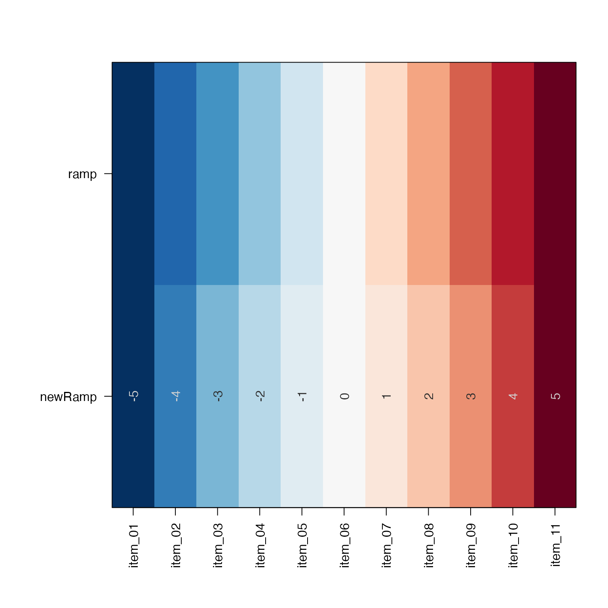
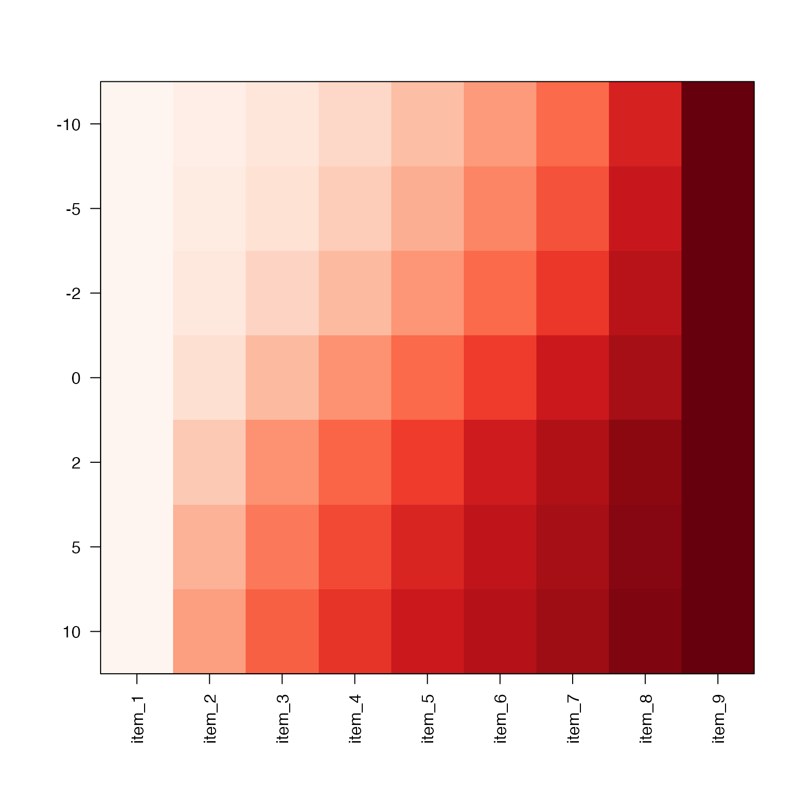
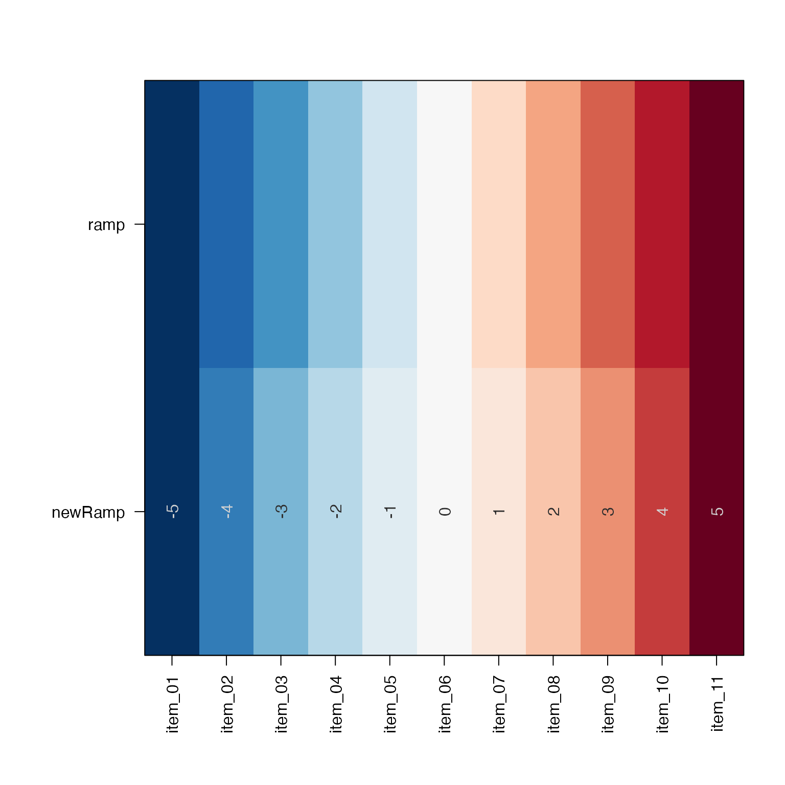
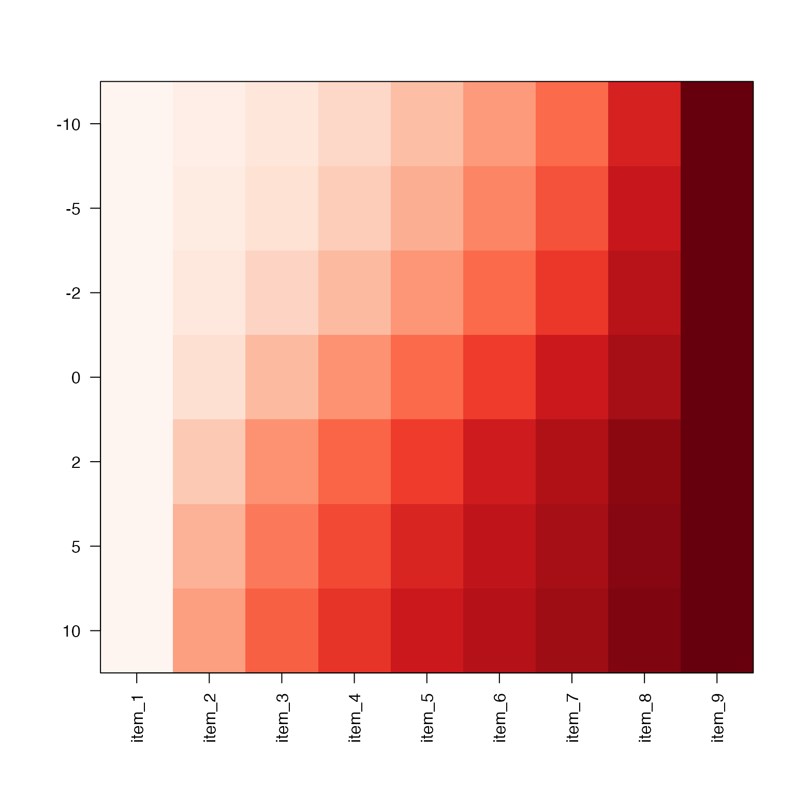

Warp colors in a color ramp
warpRamp(
ramp,
lens = 5,
divergent = TRUE,
expandFactor = 10,
plot = FALSE,
verbose = FALSE,
...
)Arguments
- ramp
character vector of R colors
- lens
numeric lens factor, centered at zero, where positive values cause colors to change more rapidly near zero, and negative values cause colors to change less rapidly near zero and more rapidly near the extreme.
- divergent
logical indicating whether the
ramprepresents divergent colors, which are assumed to be symmetric above and below zero. Otherwise, colors are assumed to begin at zero.- expandFactor
numeric factor used to expand the color ramp prior to selecting the nearest warped numeric value as the result of
warpAroundZero(). This value should not need to be changed unless the lens is extremely high (>100).- plot
logical indicating whether to plot the input and output color ramps using
showColors().- verbose
logical indicating whether to print verbose output.
- ...
additional parameters are passed to
showColors().
Value
Character vector of R colors, with the same length as the
input vector ramp.
Details
This function takes a vector of colors in a color ramp (color gradient) and warps the gradient using a lens factor. The effect causes the color gradient to change faster or slower, dependent upon the lens factor.
The main intent is for heatmap color ramps, where the color gradient changes are not consistent with meaningful numeric differences being shown in the heatmap. In short, this function enhances colors.
See also
Other jam color functions:
alpha2col(),
applyCLrange(),
col2alpha(),
col2hcl(),
col2hsl(),
col2hsv(),
color2gradient(),
fixYellowHue(),
fixYellow(),
getColorRamp(),
hcl2col(),
hsl2col(),
hsv2col(),
isColor(),
kable_coloring(),
makeColorDarker(),
make_html_styles(),
make_styles(),
rgb2col(),
setCLranges(),
setTextContrastColor(),
showColors(),
unalpha()
Examples
BuRd <- rev(brewer.pal(11, "RdBu"));
BuRdPlus5 <- warpRamp(BuRd, lens=2, plot=TRUE);
 BuRdMinus5 <- warpRamp(BuRd, lens=-2, plot=TRUE);

Reds <- brewer.pal(9, "Reds");
RedsL <- lapply(nameVector(c(-10,-5,-2,0,2,5,10)), function(lens){
warpRamp(Reds, lens=lens, divergent=FALSE)
});
showColors(RedsL);

BuRdMinus5 <- warpRamp(BuRd, lens=-2, plot=TRUE);

Reds <- brewer.pal(9, "Reds");
RedsL <- lapply(nameVector(c(-10,-5,-2,0,2,5,10)), function(lens){
warpRamp(Reds, lens=lens, divergent=FALSE)
});
showColors(RedsL);
